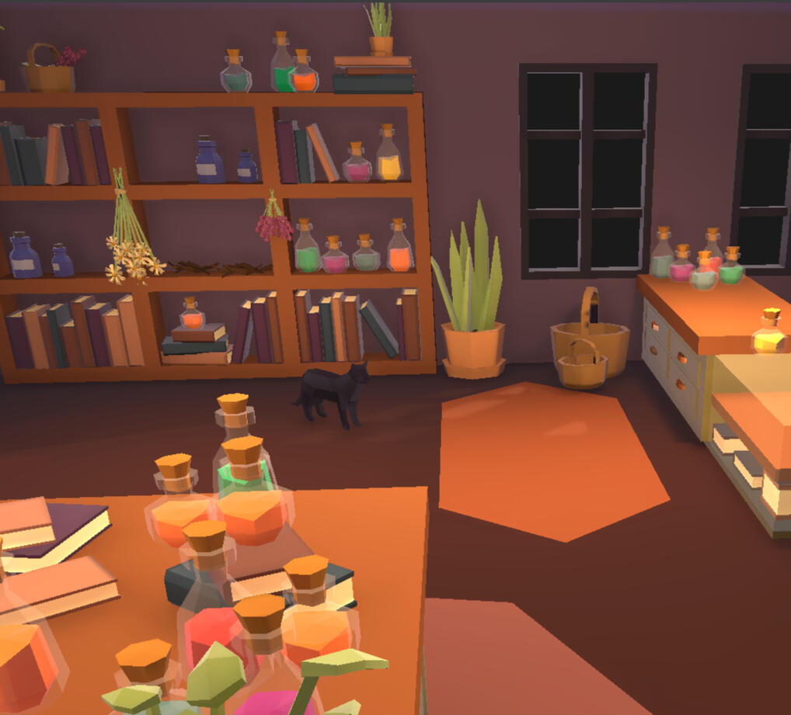
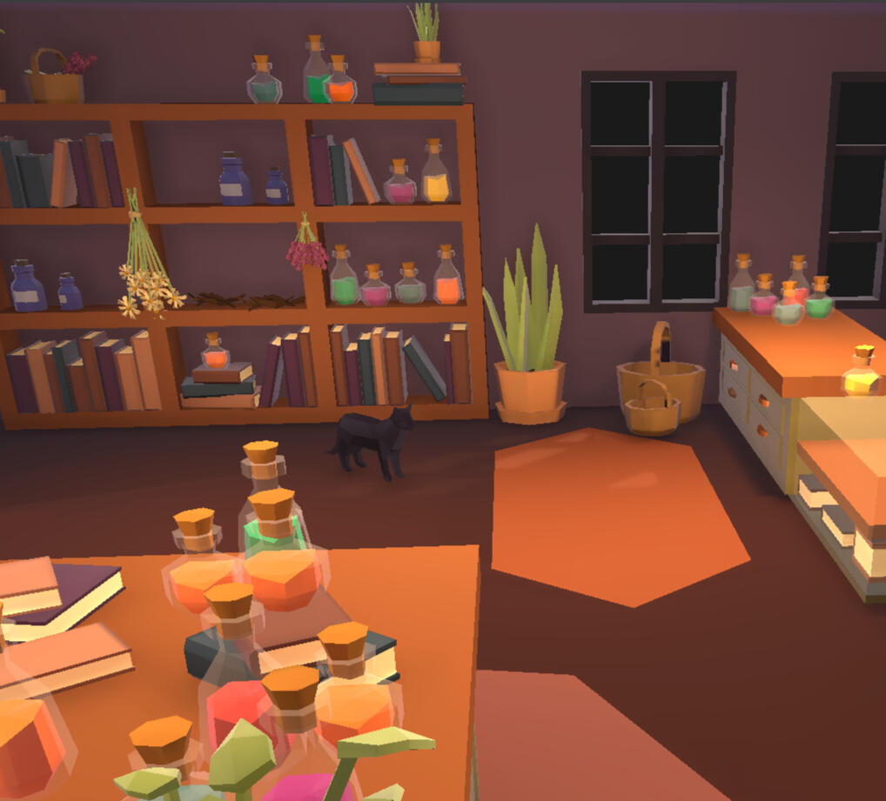

gaia's brewery
When you inherit your late aunt's potion shop, you abandon your life in the city to become the healer of a small town called Misty Hollow. Will you follow in your aunt's footsteps, or make a legacy of your own?This 3D isometric point-and-click game was created in Unity Version Control in collaboration with Stella Barbagiannis and Lilli Harris. I designed the narrative and dialogue system for this project using Ink. I also created the environment and 3D assets in Maya, and the 2D sprites for the UI in Procreate. Stella was responsible for the game design and most of the programming, and Lilli managed the art direction for the project.
narrative design
Gaia's Brewery is a heavily narrative game with a robust dialogue system and character-driven gameplay. The player interacts with customers, gathers ingredients, brews potions, and reads letters, while the shop slowly comes to life around them.The game follows Emaline, a young nurse who leaves her life in the city to inherit her deceased aunt's potion shop. Here she meets various locals who, in exchange for helping with their troubles, welcome her into their small town and tell her more about her mysterious aunt Gaia. Ultimately, Emaline must determine if she is running Gaia's Brewery for her own sake, or simply following in her aunt's footsteps.
 
